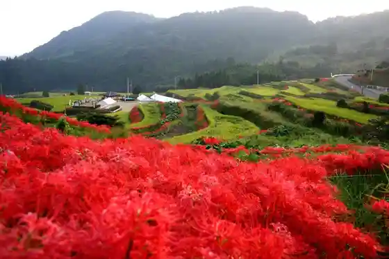
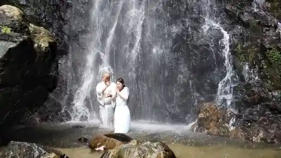
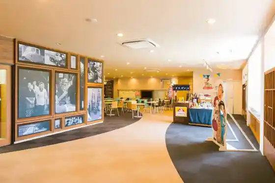

Eri Yama no Tanada (Higan Hana)
Ogi, Saga · Official / source link

Experience : Tendai Shu no Kosatsu (Takara Chi In) De no Shakyo Takigyo
Ogi, Saga · 080-1716-0776 · Official / source link

Shimizu Falls
Ogi, Saga · 0952-37-6129 · Official / source link
Ogi Joryu Tokoro
Ogi, Saga · 0952-60-2095 · Official / source link
Tomo Masu Inryo
Ogi, Saga · Official / source link

Suga Shrine
Ogi, Saga · 0952-72-7115 · Official / source link
Ashikari Kaigan Mutsugoro Hogoku
Ogi, Saga · 0952-37-6129 · Official / source link
Ogi Park
Ogi, Saga · 0952-73-8813 · Official / source link
Kaiyu Fureai Park Oto Campground
Ogi, Saga · 0952-66-5653 · Official / source link
Tenzan Shuzo
Ogi, Saga · 0952-73-3141 · Official / source link
Experience : Tendai Shu no Kosatsu (Takara Chi In) De no Shakyo
Ogi, Saga · 080-1716-0776 · Official / source link
Muraoka So Honpo Yokan Museum
Ogi, Saga · 0952-72-2131 · Official / source link
Muraoka So Honpo
Ogi, Saga · 0952-72-2131 · Official / source link
Hatcho Campground
Ogi, Saga · 0952-37-6125 · Official / source link
Oyanagi Shuzo
Ogi, Saga · 0952-73-2003 · Official / source link
Ushio Umebayashi
Ogi, Saga · 0952-37-6125 · Official / source link
Ogi Tourism Association
Ogi, Saga · 0952-72-7423 · Official / source link
Gochiku Kannon Do
Ogi, Saga · 0952-73-8809 · Official / source link
Workshop Tohen Boku Sabu Iori
Ogi, Saga · 0952-72-2263 · Official / source link
Seigan Tera
Ogi, Saga · 0952-37-6129 · Official / source link
Nakabayashi Gochiku Memorial Museum
Ogi, Saga · 0952-71-1132 · Official / source link
Ogi Kenko Supotsu Center (Airu)
Ogi, Saga · 0952-51-5515 · Official / source link
Ogi Yakusho
Ogi, Saga · 0952-37-6111 · Official / source link